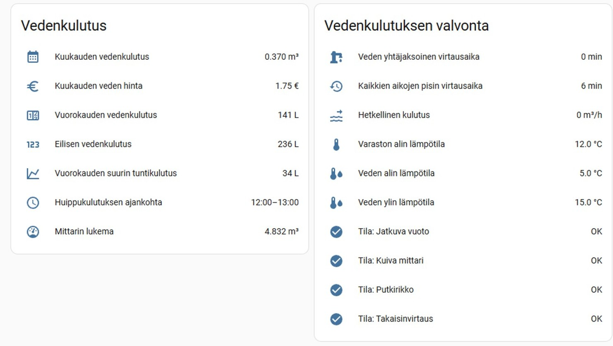
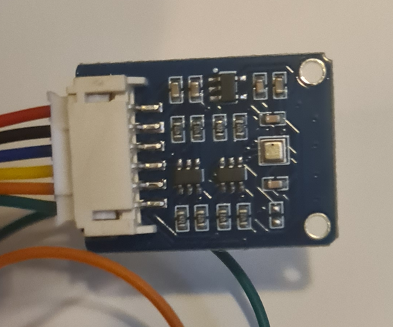
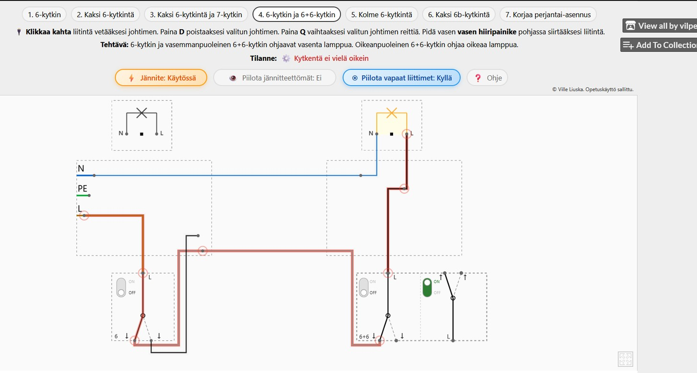

{kind=link}

Vesimittarin etäluenta
Vesimittarin etäluentaprojekti, jossa vesimittarin kulutustiedot vastaanotetaan langattomasti ESP32-mikrokontrollerin ja CC1101-radiomoduulin avulla. Vastaanotetut tiedot välitetään Home Assistant -kotiautomaatiojärjestelmään.
Katso projektisivu{kind=link}

Korvausilmalaitteen ohjaus
Korvausilmalaitteen ohjausautomaatiossa anturin mittaustieto luetaan ESP32:lla ja tuodaan Node-REDiin, jossa toteutetaan laitteen ohjauslogiikka. Varsinainen päälle- ja poiskytkentä tehdään Shelly Plug -älypistorasian kautta.
Katso projektisivu{kind=link}
{kind=link}
Automaattinen tarratulostin
Android-sovellus kaapelitarrojen tekemiseen esimerkiksi kaapelilistoista. Sovelluksen avulla kaapelitarrat voidaan tulostaa ilman, että käyttäjän tarvitsee kirjoittaa jokaista kaapelitunnusta erikseen tarratulostimeen tai puhelimeen.
Katso projektisivu{kind=link}

Moniviiva-opettamispeli
Selainpohjainen opetuspeli valaistuskytkentöjen harjoitteluun. Pelissä rakennetaan kytkentöjä ja nähdään visuaalisesti, miten eri kytkinasennot vaikuttavat lamppujen toimintaan.
Katso projektisivu